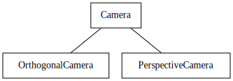

Esercitazione 7
Calcolo numerico per la generazione di immagini fotorealistiche
Maurizio Tomasi maurizio.tomasi@unimi.it
Codice da implementare
Nuovi tipi
Oggi implementeremo tre tipi molto semplici:
- Il tipo
Rayrappresenta un raggio di luce; - Il tipo
Camerarappresenta l’osservatore/telecamera; - Il tipo
ImageTracerinvia raggi dall’osservatore allo schermo.
- Il tipo
Il tipo
Raydeve essere molto efficiente, quindi è meglio che sia un value type comeColor,Vec, etc. (vedi lezione 02b).I tipi
CameraeImageTracernon sono critici, e non serve che siano particolarmente ottimizzati.Come al solito, potete fare riferimento al repository pytracer per una implementazione in Python (ma non implementate i test nel modo usato lì!).
La classe Ray
Deve contenere i campi seguenti:
origin: oggetto di tipoPoint(origine del raggio);dir: oggetto di tipoVec(direzione del raggio);tmin: numero floating-point (distanza minima);tmax: numero floating-point (distanza massima);depth: intero.
Potete fare in modo che gli ultimi tre campi abbiano come valori di default
tmin = 1e-5,tmax = +∞,depth = 0.Definite un metodo
atche calcoli un punto lungo il raggio per un dato t, e un metodois_closeche verifichi se due raggi hannooriginedirsimili.
Implementazione di Ray
from math import inf
@dataclass
class Ray:
origin: Point = Point()
dir: Vec = Vec()
tmin: float = 1e-5
tmax: float = inf
depth: int = 0
def is_close(self, other: Ray, epsilon=1e-5):
return (self.origin.is_close(other.origin, epsilon=epsilon) and
self.dir.is_close(other.dir, epsilon=epsilon))
def at(self, t: float) -> Point:
return self.origin + self.dir * tTest per Ray
class TestRays(unittest.TestCase):
def test_is_close(self):
ray1 = Ray(origin=Point(1.0, 2.0, 3.0), dir=Vec(5.0, 4.0, -1.0))
ray2 = Ray(origin=Point(1.0, 2.0, 3.0), dir=Vec(5.0, 4.0, -1.0))
ray3 = Ray(origin=Point(5.0, 1.0, 4.0), dir=Vec(3.0, 9.0, 4.0))
assert ray1.is_close(ray2)
assert not ray1.is_close(ray3)
def test_at(self):
ray = Ray(origin=Point(1.0, 2.0, 4.0), dir=Vec(4.0, 2.0, 1.0))
assert ray.at(0.0).is_close(ray.origin)
assert ray.at(1.0).is_close(Point(5.0, 4.0, 5.0))
assert ray.at(2.0).is_close(Point(9.0, 6.0, 6.0))L’osservatore
Vogliamo implementare due tipi di proiezioni nel nostro codice:
- Proiezione ortogonale
- Proiezione prospettica
Questa è una buona occasione per implementare il polimorfismo, ossia il fatto che il nome di una funzione corrisponda ad implementazioni diverse a seconda del tipo dell’oggetto
Esempio
L’esempio più semplice (ma forse inatteso!) di polimorfismo è l’overloading:
La funzione
printassume due forme a seconda che l’argomento sia un intero o un floating-pointLa decisione di quale chiamata usare viene decisa dal compilatore in fase di compilazione
Proiezioni e polimorfismo
Potremmo allora usare l’overloading per implementare le due proiezioni (ortogonale e prospettica):
Ma che tipo stabiliamo per la variabile
cam?OrthogonalCameraoppurePerspectiveCamera?
Polimorfismo dinamico
La programmazione OOP consente di salvarsi da questo pasticcio introducendo un terzo tipo oltre a OrthogonalCamera oppure PerspectiveCamera:
struct Camera { virtual void fire_ray(...) = 0; };
struct OrthogonalCamera : public Camera { void fire_ray(...) override; };
struct PerspectiveCamera : public Camera { void fire_ray(...) override; };
int main() {
std::string kind_of_camera = input_camera();
Camera * camera = (kind_of_camera == "orthogonal") ?
new OrthogonalCamera() : new PerspectiveCamera();
// ...
}Tipi di polimorfismo
Ci sono due tipi di polimorfismo:
Polimorfismo statico (ossia in fase di compilazione): è il caso dell’overloading.
Polimorfismo dinamico: è il caso della gerarchia di classi.
Esistono tipi di polimorfismo più sofisticati, come il multiple dispatch che è un concetto cardine del linguaggio Julia ed è implementato in modo sperimentale anche in Nim, ma a noi non interessa.
Interfacce e traits
Un caso molto comune è quello in cui la classe base è solo un escamotage per avere un tipo base, ma tutti i metodi sono virtuali
Per questo motivo alcuni linguaggi moderni offrono meccanismi più leggeri chiamati interfacce (Go, C#) o traits (Rust). Una interfaccia è l’analogo di una classe in cui tutti i metodi sono vuoti; ecco un esempio in Go:
Le classi *Camera
In linguaggi che implementano l’ereditarietà,
Camerasarà il tipo da cui sono derivati i nuovi tipiOrthogonalCameraePerspectiveCamera.L’idea è proprio di implementare la gerarchia di tipi che abbiamo visto:

Usate quanto il vostro linguaggio permette per implementare il polimorfismo: gerarchia di classi in C#/D/Kotlin, traits in Rust, dynamic dispatch in Nim
P = (-d, 0, 0),\ \vec d = (d, 0, 0),\ \vec u = (0, 0, 1), \vec r = (0, -a, 0).
Orientare Camera
Gli unici parametri aggiustabili di
Camerasonod(distanza schermo-osservatore) ea(aspect ratio dell’immagine).Il sistema di riferimento della slide precedente è rigido: è quindi molto facile da implementare, perché non serve memorizzare i vettori \vec d, \vec u e \vec v.
Per orientare una
Camera, possiamo usare il tipoTransformationche abbiamo implementato settimana scorsa.Sugli oggetti di tipo
*Cameradeve essere possibile invocare un metodofire_rayche accetta in input una coordinata (u, v) e restituisce un oggettoRay.
Trasformazioni
Se associamo una trasformazione T all’osservatore, potremmo applicarla ai punti/vettori che definiscono l’osservatore, ossia P, \vec d, \vec u e \vec r, e spostare/orientare l’osservatore.
Ma così è complicato calcolare le direzioni dei raggi che attraversano lo schermo nella funzione
fire_ray!È meglio creare i raggi nel sistema di riferimento originale, e poi applicare la trasformazione al raggio: è più semplice e si fanno meno calcoli.
Serve quindi implementare l’operatore
Transformation * Ray, che applicherà la trasformazione T sia a O (origine) che a \vec d (direzione del raggio).
Trasformare Ray
Questa è l’applicazione di una trasformazione a un raggio; potreste in alternativa ridefinire l’operatore
*nel casoTransform * Ray:Non è necessario trasformare
tminetmax.
Test per transform
def test_transform():
ray = Ray(origin=Point(1.0, 2.0, 3.0), dir=Vec(6.0, 5.0, 4.0))
transformation = translation(Vec(10.0, 11.0, 12.0)) * rotation_x(90.0)
transformed = ray.transform(transformation)
assert transformed.origin.is_close(Point(11.0, 8.0, 14.0))
assert transformed.dir.is_close(Vec(6.0, -4.0, 5.0))Tipi di proiezioni

Coordinate dello schermo
Per evitare confusione tra coordinate spaziali (x, y, z) e coordinate 2D dello schermo, useremo le lettere (u, v) per indicare punti dello schermo:

Ad esempio, un raggio sparato verso (u, v) = (0, 1) deve passare per il punto P + \vec d - \vec r + \vec u.

OrthogonalCamera
Per costruirla serve il parametro
aspect_ratio(un floating point, o un razionale come16//9in Julia) etransformation.Questa è una possibile implementazione in Python:
class OrthogonalCamera(Camera): def __init__(self, aspect_ratio=1.0, transformation=Transformation()): self.aspect_ratio = aspect_ratio self.transformation = transformation def fire_ray(self, u: float, v: float): origin = Point(-1.0, (1.0 - 2 * u) * self.aspect_ratio, 2 * v - 1) direction = VEC_X return Ray(origin=origin, dir=direction, tmin=1.0).transform(self.transformation)
Test per l’osservatore
È importante verificare che i quattro angoli dell’immagine siano proiettati in modo corretto. Scegliamo anche un aspect ratio diverso da 1.
Per
OrthogonalCameraverifichiamo che i raggi siano paralleli tra loro: lo facciamo calcolandone il prodotto scalare e verificando che coincida col vettore nullo.(Per
PerspectiveCameraverificheremo invece che tutti i raggi abbiano la medesima origine).
Test per OrthogonalCamera
def test_orthogonal_camera(self):
cam = OrthogonalCamera(aspect_ratio=2.0)
ray1 = cam.fire_ray(0.0, 0.0)
ray2 = cam.fire_ray(1.0, 0.0)
ray3 = cam.fire_ray(0.0, 1.0)
ray4 = cam.fire_ray(1.0, 1.0)
# Verify that the rays are parallel by verifying that cross-products vanish
assert are_close(0.0, ray1.dir.cross(ray2.dir).squared_norm())
assert are_close(0.0, ray1.dir.cross(ray3.dir).squared_norm())
assert are_close(0.0, ray1.dir.cross(ray4.dir).squared_norm())
# Verify that the ray hitting the corners have the right coordinates
assert ray1.at(1.0).is_close(Point(0.0, 2.0, -1.0))
assert ray2.at(1.0).is_close(Point(0.0, -2.0, -1.0))
assert ray3.at(1.0).is_close(Point(0.0, 2.0, 1.0))
assert ray4.at(1.0).is_close(Point(0.0, -2.0, 1.0))Test per l’osservatore
Verifichiamo anche l’applicazione di una trasformazione:
Per
PerspectiveCamerail test sarà molto simile.
PerspectiveCamera
Oltre all’aspect ratio e alla trasformazione, la proiezione prospettica richiede anche la distanza d tra lo schermo e l’osservatore.
Questa è l’implementazione in Python:
class PerspectiveCamera(Camera): def __init__(self, distance=1.0, aspect_ratio=1.0, transformation=Transformation()): self.distance = distance self.aspect_ratio = aspect_ratio self.transformation = transformation def fire_ray(self, u: float, v: float): origin = Point(-self.distance, 0.0, 0.0) direction = Vec(self.distance, (1.0 - 2 * u) * self.aspect_ratio, 2 * v - 1) return Ray(origin=origin, dir=direction, tmin=1.0).transform(self.transformation)
Test per PerspectiveCamera
def test_perspective_camera(self):
cam = PerspectiveCamera(screen_distance=1.0, aspect_ratio=2.0)
ray1 = cam.fire_ray(0.0, 0.0)
ray2 = cam.fire_ray(1.0, 0.0)
ray3 = cam.fire_ray(0.0, 1.0)
ray4 = cam.fire_ray(1.0, 1.0)
# Verify that all the rays depart from the same point
assert ray1.origin.is_close(ray2.origin)
assert ray1.origin.is_close(ray3.origin)
assert ray1.origin.is_close(ray4.origin)
# Verify that the ray hitting the corners have the right coordinates
assert ray1.at(1.0).is_close(Point(0.0, 2.0, -1.0))
assert ray2.at(1.0).is_close(Point(0.0, -2.0, -1.0))
assert ray3.at(1.0).is_close(Point(0.0, 2.0, 1.0))
assert ray4.at(1.0).is_close(Point(0.0, -2.0, 1.0))ImageTracer
Ci manca ora l’ultimo tassello: una funzionalità che leghi il tipo
HdrImagea uno dei tipi derivati daCamera.Il nuovo tipo
ImageTracersi occuperà di inviare raggi ai pixel corrispondenti in un’immagine, facendo la conversione tra l’indice(column, row)di un pixel usati daHdrImagee i valori(u, v)che usaCamera.Per comodità, definiamo due funzioni associate a
ImageTracer:- Una funzione
fire_rayche invia un raggio verso un pixel specificato; - Una funzione
fire_all_raysche itera su tutti i pixel dell’immagine la chiamata afire_ray.
- Una funzione
fire_ray
La funzione
fire_raydeve inviare un raggio verso un pixel dell’immagine.A parte convertire le coordinate dallo spazio
(u, v)allo spazio dei pixel, c’è il problema della superficie del pixel.Un pixel non è infatti un punto, perché ha una certa area: in quale punto all’interno del pixel deve passare il raggio?
Per il momento faremo passare il raggio nel centro del pixel, ma facciamo in modo che si possa specificare una posizione relativa tramite due coordinate
(u_pixel, v_pixel), simili alle coordinate(u, v)ma riferite alla superficie del pixel anziché dell’immagine.
fire_all_rays
Una volta «lanciato» un raggio verso un pixel, la funzione
fire_all_raysdovrebbe calcolare la soluzione dell’equazione del renderingImplementeremo più metodi risolutivi, alcuni accurati ma lenti e altri grossolani ma velocissimi: quindi anche qui potremmo usare il polimorfismo. Ma…
…quello che invece facciamo per ora è accettare come argomento di
fire_all_raysuna funzione che venga invocata per ogni pixel/raggio dell’immagine e restituisca un oggetto di tipoColor.Questo è un approccio alternativo al polimorfismo, e vi consiglio di provarlo! Potrete poi cambiarlo se vedete che nel vostro linguaggio porta a codice poco naturale.
ImageTracer in Python
class ImageTracer:
def __init__(self, image: HdrImage, camera: Camera):
self.image = image
self.camera = camera
def fire_ray(self, col: int, row: int, u_pixel=0.5, v_pixel=0.5):
# There is an error in this formula, but implement it as is anyway!
u = (col + u_pixel) / (self.image.width - 1)
v = (row + v_pixel) / (self.image.height - 1)
return self.camera.fire_ray(u, v)
def fire_all_rays(self, func):
for row in range(self.image.height):
for col in range(self.image.width):
ray = self.fire_ray(col, row)
color = func(ray)
self.image.set_pixel(col, row, color)Test per ImageTracer
def test_image_tracer(self):
image = HdrImage(width=4, height=2)
camera = PerspectiveCamera(aspect_ratio=2)
tracer = ImageTracer(image=image, camera=camera)
ray1 = tracer.fire_ray(0, 0, u_pixel=2.5, v_pixel=1.5)
ray2 = tracer.fire_ray(2, 1, u_pixel=0.5, v_pixel=0.5)
assert ray1.is_close(ray2)
tracer.fire_all_rays(lambda ray: Color(1.0, 2.0, 3.0))
for row in range(image.height):
for col in range(image.width):
assert image.get_pixel(col, row) == Color(1.0, 2.0, 3.0)Guida per l’esercitazione
Guida per l’esercitazione
Create un branch per il lavoro di oggi, che chiamerete
cameras.Implementate questi tipi:
Ray;Camera,OrthogonalCameraePerspectiveCamera;ImageTracer.
Implementate tutti i test. Quando avete terminato l’implementazione e i test passano con successo, chiudete il PR.